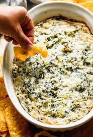

Hot Spinach Artichoke Dip

This spinach artichoke dip is delicious. It's so cheesy and fragrant.
If you don't like artichokes, don't worry — you'll never know they're in there!
My only question is: Is it okay to eat it with a spoon right out of the dish?
Ingredients
- Cream cheese: This satisfying spinach artichoke dip starts with a block of cream cheese.
- Mayonnaise: Mayonnaise lends creaminess and a welcome tangy flavor.
- Cheeses: You'll need grated Parmesan, grated Romano, and shredded mozzarella.
- Garlic: A clove of minced garlic takes the flavor up a notch.
- Spices and seasonings: The spinach artichoke dip is seasoned with dried basil, garlic salt, salt, and pepper.
- Artichoke hearts: Drain and chop one can of artichoke hearts.
- Spinach: Thawed and drained frozen spinach is perfect for this easy recipe.